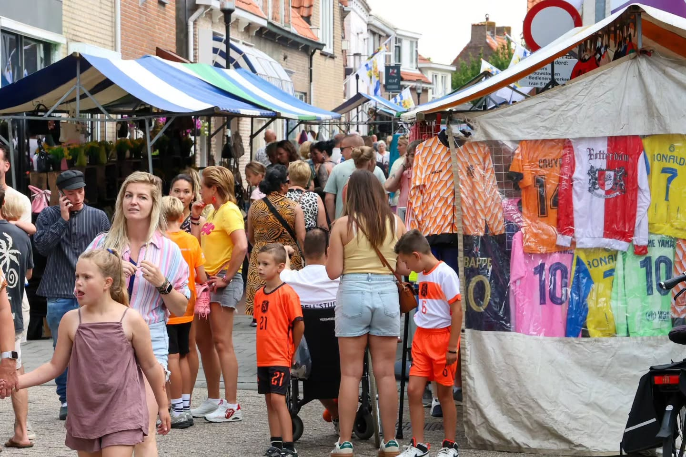
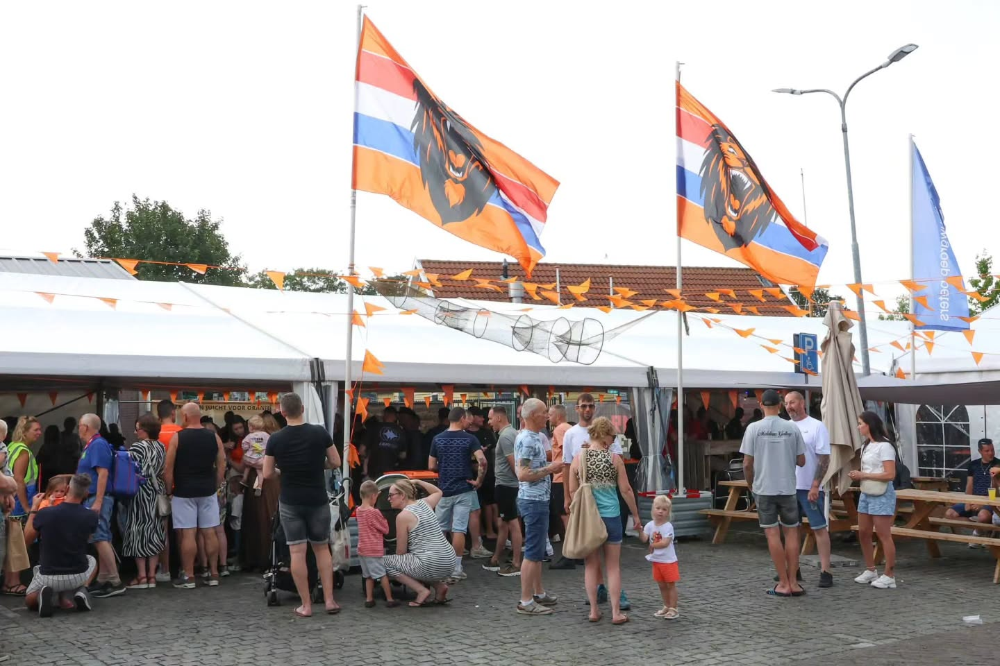
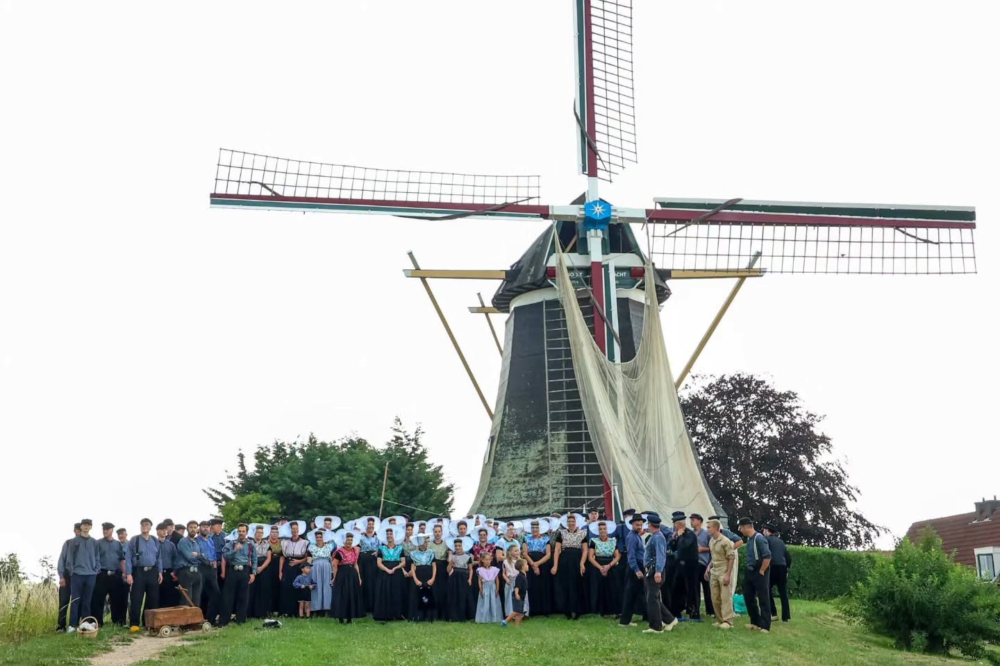
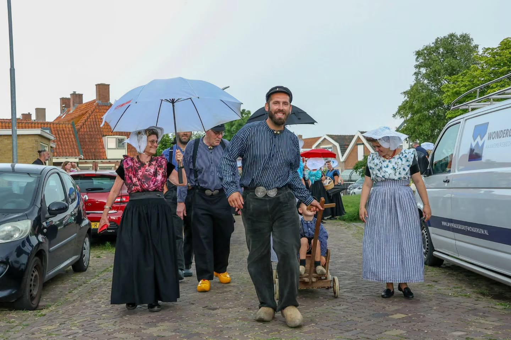
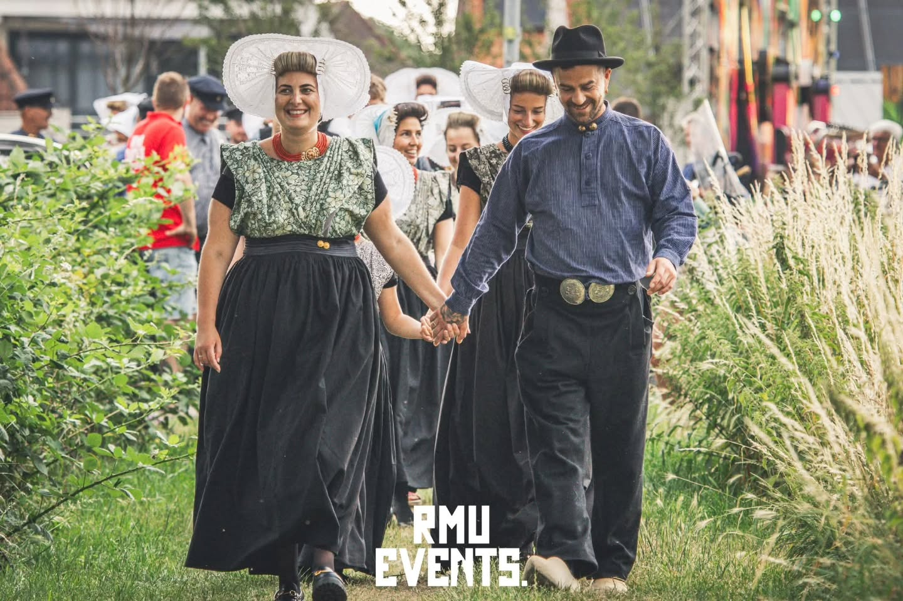
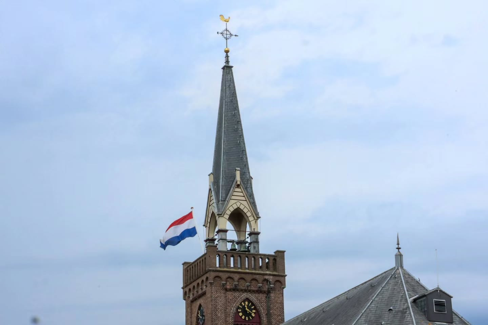

Visserijdagen Arnemuiden
Drie dagen folklore, braderie en muziek. Overal Arnemuidse vlaggen door het straatbeeld en een programma dat voor en door Arnemuiden gemaakt is.
Meer lezenUit het stadje
Met elkaar en voor elkaar werken we aan het behoud van Arnemuiden als karakteristieke vissersplaats. Dit staat er op de rol.

Drie dagen folklore, braderie en muziek. Overal Arnemuidse vlaggen door het straatbeeld en een programma dat voor en door Arnemuiden gemaakt is.
Meer lezen
Reserveer een kraam of een grondplaats voor de braderie. Vol is vol, dus meld je op tijd aan — plaatsen worden op volgorde van aanmelding verdeeld.
Meer lezen
Van vier draagsters naar een heel stadje in klederdracht. We verzamelen kledingstukken, geven workshops aankleden en investeren in de mannendracht.
Meer lezen
De jaarlijkse foto-expositie in Dorpshuis de Arne. Zo bewaren we onze geschiedenis digitaal en delen we die met iedereen met een band met het stadje.
Meer lezen
Een uurtje tappen, kramen opbouwen of meedenken over het programma: elke hulp telt. Geef door wat je leuk vindt en we zoeken er iets bij.
Meer lezen
Als verbinder tussen jong, oud, gemeente en politie werken we het hele jaar aan een veilige en gezellige jaarwisseling voor elke erremuunaer.
Meer lezen